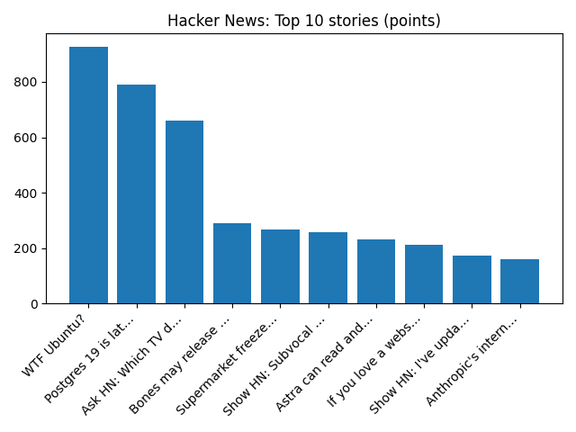

Snap settles with two teens during trial testing claims social media caused depression, eating disorders - Reuters
Reuters — Headlines (Google News)
YOUR DAILY INTELLIGENCE BRIEF · 2026-11-02
Global watch: Snap settles with two teens during trial testing claims social media caused depression, eating disorders - Reuters, Karl Bushby embraces emotional mother as he completes his 28-year, 31,000-mile walk around world - AP News.
Northern Virginia: Alexandria Holiday Calendar 2026: Tree Lightings, Parades, Markets, Mount Vernon and More - Alexandria Living Magazine, Route 7 crash study names Beauregard, King Street area a top priority for safety review - The Alexandria Brief.

Global coverage includes Snap settles with two teens during trial testing claims social media caused depression, eating disorders - Reuters; Karl Bushby embraces emotional mother as he completes his 28-year, 31,000-mile walk around world - AP News; Judge accuses DOJ of 'weaponization,' tosses case against ex-FBI officials. Local coverage includes Alexandria Holiday Calendar 2026: Tree Lightings, Parades, Markets, Mount Vernon and More - Alexandria Living Magazine; Route 7 crash study names Beauregard, King Street area a top priority for safety review - The Alexandria Brief.

Pecks Beach
Pecks Beach or Peck's Beach is a barrier island located on the Jersey Shore in Cape May County, New Jersey occupied by Ocean City.
https://en.wikipedia.org/wiki/Pecks_Beach
Runs so far today: 2